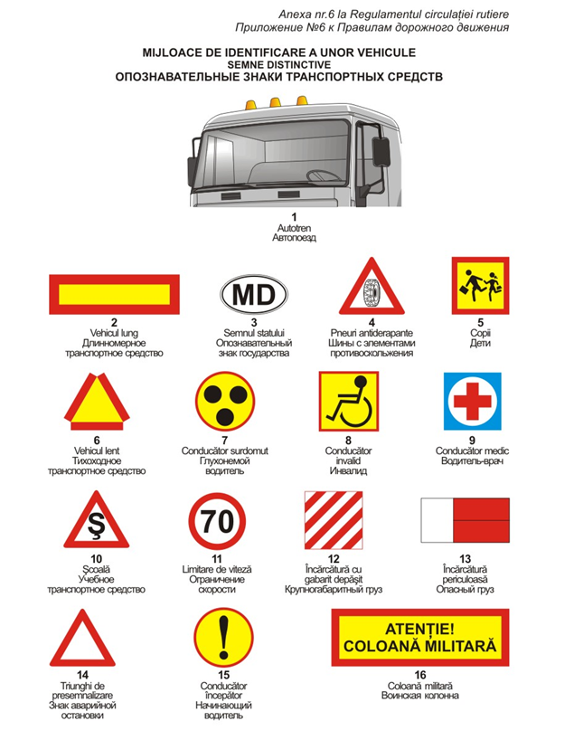

În scopul ridicării siguranţei la trafic, vehiculele vor fi semnalizate cu semne distinctive corespunzătoare:
1.„Autotren” − trei lanterne de culoare portocalie, amplasate orizontal deasupra cabinei, avînd spaţii egale între ele de 150-300 mm − se instalează pe autocamioanele şi tractoarele cu roţi (de categoria 1400 kg şi mai mare) care tractează remorci, precum şi pe autobuzele şi troleibuzele care sînt articulate.
2.„Vehicul lung” − dreptunghi cu suprafaţa reflectorizantă, avînd dimensiunea de 560 x 200 mm, de culoare galbenă, cu conturul de culoare roşie (lăţimea conturului 40 mm) − se instalează în spatele autovehiculului, în partea de jos a caroseriei, pe ambele părţi la cel mult 0,40 m de la extremităţile laterale ale vehiculului.
3.„Semnul statului” − elipsă (oval) cu suprafaţa reflectorizantă, avînd dimensiunea axei mari de 165 mm, axei mici de 105 mm, de culoare albă, cu conturul de culoare neagră (lăţimea conturului 5 mm), pe fondul căreia este aplicată inscripţia „MD” de culoare neagră − se instalează în spatele autovehiculelor înmatriculate în Republica Moldova care participă în traficul internaţional.
4.„Pneuri antiderapante” − triunghi echilateral cu vîrful în sus, de culoare albă, cu conturul de culoare roşie, pe fondul căruia este aplicat simbolul unui pneu cu lanţuri de culoare neagră (latura triunghiului 200-300 mm, în funcţie de tipul vehiculului, lăţimea conturului 1/10 din latură) − se instalează în spate pe partea stîngă a autovehiculelor echipate cu pneuri care au elemente antiderapante.
5. „Copii” − pătrat de culoare galbenă, cu conturul de culoare roşie (latura 250-300 mm, în funcţie de tipul microbuzului sau autobuzului, lăţimea conturului 1/10 din latură), pe fondul căruia este aplicat simbolul indicatorului rutier 1.21 de culoare neagră − se instalează în faţa şi în spatele microbuzelor şi autobuzelor care efectuează transportarea în grup a copiilor.
6. „Vehicul lent” − triunghi echilateral cu vîrful în sus şi cu suprafaţa reflectorizantă, de culoare galbenă, cu conturul necomplet de culoare roşie (latura triunghiului
200-300 mm, în funcţie de tipul vehiculului, lăţimea conturului 1/10 din latură) − se instalează în spatele autovehiculului lent, în partea de jos a caroseriei, pe ambele părţi la cel mult 0,40 m de la extremităţile laterale ale vehiculului.
7. „Conducător surdomut” − cerc (diametrul 160 mm) de culoare galbenă, cu conturul de culoare roşie (lăţimea conturului 5 mm), în care sînt înscrise trei cerculeţe de culoare neagră (diametrul 40 mm) dispuse în unghiurile unui triunghi echilateral imaginar, al cărui vîrf este îndreptat în jos − se instalează în faţa şi în spatele autovehiculelor ai căror conducători sînt surzi sau surdomuţi.
8.„Conducător invalid” − pătrat (latura 140 mm) de culoare galbenă, cu conturul de culoare roşie (lăţimea conturului 5 mm), pe fondul căruia este aplicat simbolul invalidului de culoare neagră − se instalează în faţa şi în spatele autovehiculului condus de invalid.
9.„Conducător medic” − pătrat (latura 140 mm) de culoare albastră care are înscris în el un cerc (diametrul 125 mm) de culoare albă, pe care este aplicată o cruce de culoare roşie (lungimea liniei 90 mm, lăţimea liniei 25 mm) − poate fi amplasat în faţa şi în spatele autovehiculelor, la dorinţa conducătorului medic.
10.„Şcoală” − triunghi echilateral cu vîrful în sus, de culoare albă, cu conturul de culoare roşie, pe fondul căruia este aplicată inscripţia „Ş” de culoare neagră (latura triunghiului 200-300 mm, în funcţie de tipul vehiculului, lăţimea conturului 1/10 din latură) − se instalează în faţa şi în spatele autobuzelor şi camioanelor cu care se efectuează instruirea.
11. „Limitare de viteză” − cerc de culoare albă (diametrul 160-250 mm, în funcţie de tipul vehiculului), cu conturul de culoare roşie (lăţimea conturului 1/10 din diametru), care reprezintă simbolul indicatorului rutier 3.27 de semnificaţia corespunzătoare − se instalează în spate pe partea stîngă a autovehiculelor care transportă încărcături cu gabarit şi masă depăşite, precum şi în cazurile în care viteza maximă a vehiculului, conform caracteristicii tehnice, este mai mică decît cea stabilită în punctul 47 din prezentul Regulament.
12.„Încărcătură cu gabarit depăşit” − panou cu suprafaţa reflectorizantă de dimensiunea 400 x 400 mm, pe fondul căruia sînt aplicate pe diagonală o asociere de linii, de culoare roşie şi albă, cu lăţimea de 50 mm − se aplică în conformitate cu punctul 88 din prezentul Regulament.
13. „Încărcătură periculoasă” − dreptunghi cu suprafaţa reflectorizantă de dimensiunea 690 x 300 mm, cu conturul negru (partea dreaptă a căruia este de
400 x 300 mm, de culoare portocalie, partea stîngă – 290 x 300 mm, de culoare albă, lăţimea conturului – 15 mm), pe care se semnalizează particularităţile încărcăturii periculoase − se instalează în faţa şi în spatele vehiculelor care transportă astfel de încărcături.
14. „Triunghi de presemnalizare” − trebuie să corespundă standardului. Se utilizează conform punctului 37 subpunctul 2) din prezentul Regulament.
15.„Conducător începător” − cerc de culoare galbenă (diametrul 160-250 mm, în funcţie de tipul vehiculului), cu conturul de culoare roşie (lăţimea conturului 5 mm), pe fondul căruia este aplicat semnul exclamării de culoare neagră − se instalează în faţă şi în spatele vehiculelor ai căror conducători au o vechime în conducere mai mică de un an.
16.„Coloană militară” – dreptunghi cu suprafaţă reflectorizantă, avînd dimensiunea de 750 x 300 mm, de culoare galbenă, cu conturul de culoare roşie (lăţimea conturului 40 mm), pe fundalul căruia se aplică inscripţia „ATENŢIE! COLOANĂ MILITARĂ” de culoare neagră (înălţimea literelor – 60 mm, lăţimea literelor – 30 mm, grosimea liniei – 10 mm, distanţa dintre rînduri – 40 mm). Se instalează pe partea frontală a primului şi partea dorsală a ultimului vehicul din coloană, la o distanţă de cel mult 0,40 m de la extremitatea stîngă laterală a vehiculului.
E mai ușor să înveți Regulamentul cu profesorul care a participat la elaborarea lui.
Înscriere: 069 592 995